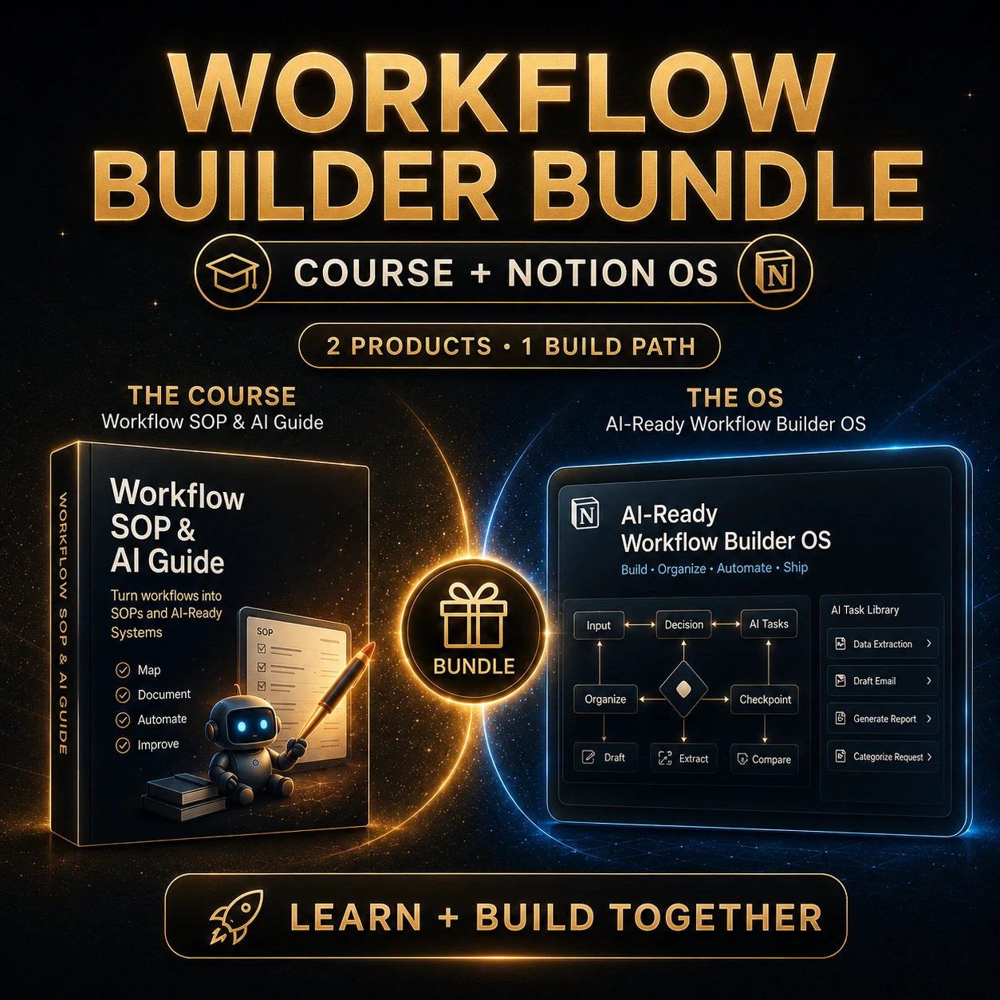
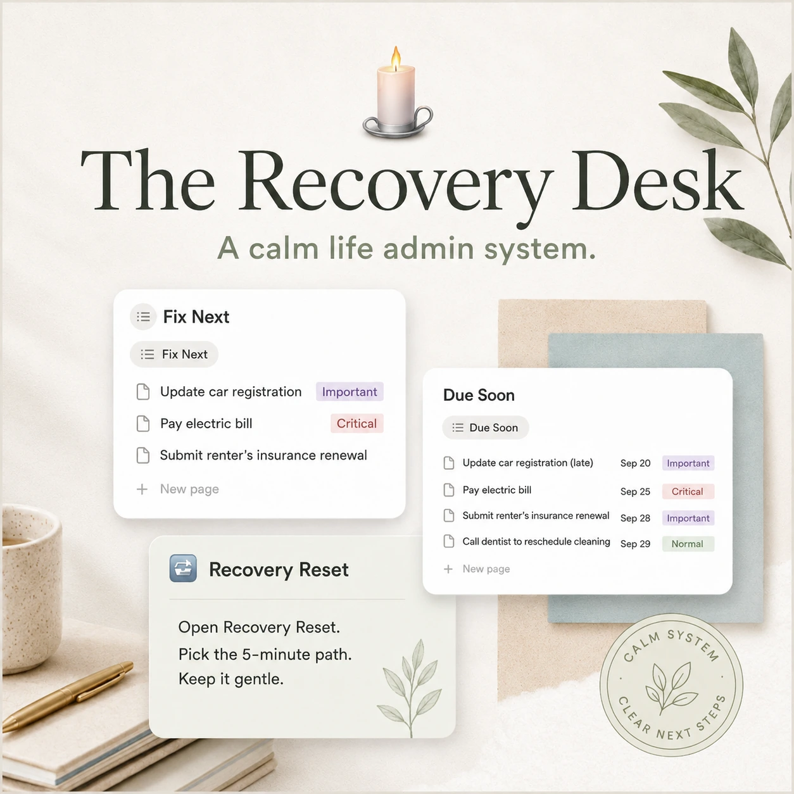
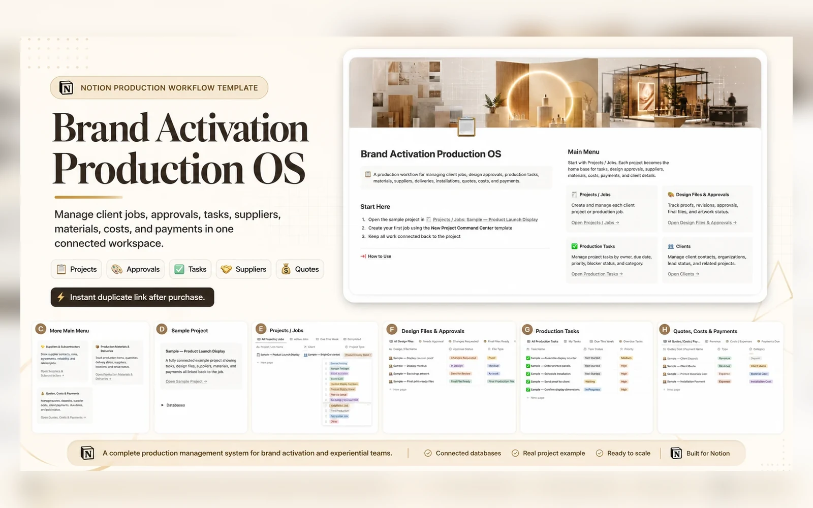

Built around real workflow pain.
Every product is positioned around a specific bottleneck: workflow building, delivery, events, recovery, AI operations, compliance, documents, or payment follow-up.
Practical Notion templates and digital tools for workflow building, client delivery, AI operations, compliance, documents, payment follow-up, event planning, and life admin recovery.



Start with the problem you are trying to clean up. The catalog is grouped by workflow building, client delivery, compliance control, payment follow-up, and personal admin recovery.
The clearest starting points for buyers who want the strongest system first.
Grouped by buyer problem so the store feels organized instead of overwhelming.
Every product is positioned around a specific bottleneck: workflow building, delivery, events, recovery, AI operations, compliance, documents, or payment follow-up.
The goal is to give buyers a system they can understand quickly, duplicate, and shape around real work.
Pick the product that matches your current bottleneck, then duplicate the system and start organizing the work in one place.
No. These are independent templates and digital tools created by DeekeBiz.
Each product links to its product page or Gumroad page.
Yes. Notion templates can be duplicated and adjusted to fit your workflow.